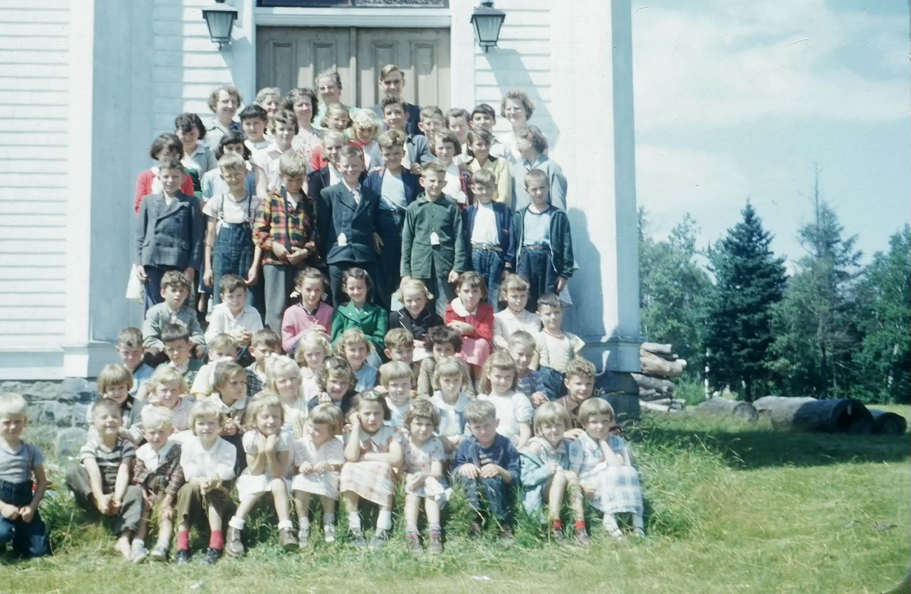

The Family Chronicle
No. 178 October 26, 2009
____________________________________________________________________

Summer Bible Camp at St. Stephen’s United Church about 1953
Bedford Peters (Thanks to Betty Peters)
Bay of Chaleur Forgotten Treasures by A. J. McCarthy tells the following story (pp115-116)
"Another family feud that ended in a death occurred on April 27, 1916, in the remote settlement of Canobie. At midnight, a boy and his mother were a wakened by a loud rapping on their cabin door.
When Sarah Peters peered from her window and recognized the intruder at her door as a troublesome neighbour, John McCarthy, she bade him to leave at once. The deranged man, who had made threats against the Peters on many occasions, commenced to break their cabin windows and violently yelled, 'I'll kill the whole damn bunch of you'.
For some time the shadowy figure skulked about their property. The family dog was sent out to run him off, but to no avail. Finally when McCarthy went to the barn where the animals were Sept, and appeared with their mare by the halter, Mrs. Peters summoned her son, Bedford, to get the shotgun. The boy, clothed only in his underwear, fired a warning shot from the window, and then proceeded outside in the pouring rain to confront McCarthy. Another warning shot was fired but McCarthy became more threatening.
He produced a knife, and lunging toward the boy, yelled, ' Get ready to die, I am going to murder you." Another warning
Shot was fired and the family dog ferociously attacked the menacing intruder.
Fearing for her son's life, Mrs. Peters yelled, "for God's sake fire! He is going to murder us.' Just as McCarthy was upon him the boy fired and the madman fell to the ground. An inquest into the death found a verdict of justifiable homicide"
The Bedford Peters mentioned in the story would have been my Grandmother (Peters) Glendenning’s half brother
Frances Ullock
The "FRANCIS ULLOCK" was a car and passenger ferry that operated from the foot of xx street n Chatham to the foot of Ferry road on the north side. (The road from the ferry on the north side connected directly to the road to Bathurst.) It was built at the Miramichi Foundry in Chatham and served from spring breakup to winter freeze-up from 1925 to 1954
The "FRANCES ULLOCK" was seventy-seven feet long and twenty-three feet wide drawing seven feet of water; it could carry 12 cars all on one deck.
The ferry was named for eleven-year old Frances Ullock who was credited with having saved two children from drowning in the Miramichi in 192.
Her record of service was unblemished for the Francis Ullock never had a single accident in her long career.
Initially owned by the Town of Chatham and fares were collected; ownership was transferred in 1948 to the Department of Public Works and was free
From
According to "Winds of Change" by Gail Macmillan, the first captain was Asa McLeod.
“Other captains of the boat included: Capt. Jack Meatier, Capt. Preston Jimmo and Capt. James Goodfellow. Engineers included: Pat Duffy, Norman Smith and Mr. Lockhart. Some of the deckhands who worked on the boat over the years included: Stewart Geikie, Chris McLean, Jack MacMillan, Donnie Fraser, Abe Myles and Harry Wilt.”
Winds of Change also tells us that
“ the lamp from Driscoll's window was a guide for the ferry. In return, the ferry provided kerosene oil for the lamp in the upstairs window and for all the lamps in the Driscoll house."
My most vivid memories of the ferry were during the summer of 1946 when loading pulp and pitprops on the boats. We would rush to catch the 6:30 a.m. ferry to be in the field to load trucks at 6:45; stowing pulp on the boats began 15 minutes later.
The Family Chronicle (Copyright) is an occasional newsletter published by Don Glendenning and posted on the family website. It is intended to share information about my family, community and the times in which I grew up. While every effort is made to be accurate, errors are likely to occur. Comments, enquiries and information may be sent to 62 Queen Elizabeth Drive, Charlottetown, PEI, C1A 3A9. Tel: 902 892 5859. Email: don@glendenning.net Web: www.glendenning.net/don